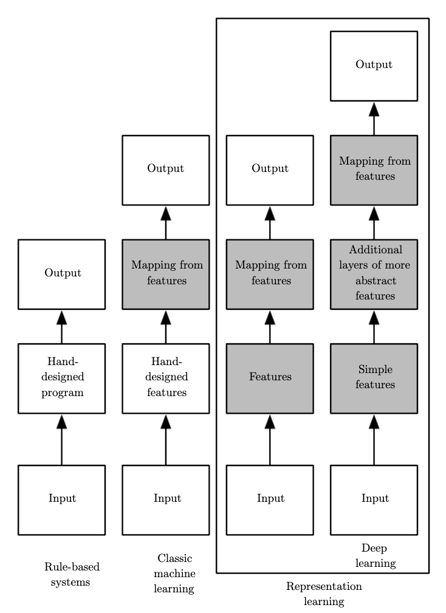
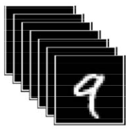
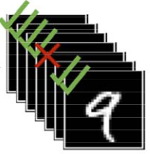

Deep learning for computer vision
A primer for the animal behaviour scientist
Sofía Miñano
Overview
Overview
Vanilla neural network
Convolutional neural network
Applications to animal behaviour
Figures from cs231n.github.io/convolutional-networks and movement.neuroinformatics.dev
Overview
Some preliminaries
What is Deep Learning?
- an approach to Artificial Intelligence
- a type of Machine Learning that uses artificial neural networks
Why is it so popular?
- gathering knowledge from experience
- being compositional
What is Artificial Intelligence?
Tesler’s theorem:
“AI is whatever hasn’t been done yet.”
Figure from stackoverflow.com

Figure from Waymo
Deep Learning as an approach to Artificial Intelligence
Early AI : problems that were intellectually challenging for humans, but easy for computers- True challenge: tasks that are easy for humans but hard to describe formally
DL has proven very powerful in solving these intuitive problems withinAI .
Deep Learning is a subset of Machine Learning
ML allows computers to tackle problems using knowledge (data) from the real world- Algorithms depend heavily on the representation of the data
Figure from Deep Learning book
Deep Learning is a subset of Machine Learning
ML allows computers to tackle problems using knowledge (data) from the real world- Algorithms depend heavily on the representation of the data
DL is a kind of representation learning

Figure from Deep Learning book
Deep Learning is compositional
Figure from Deep Learning book
Variables that we are able to observe.
Extraction of increasingly abstract features.
“Hidden” (i.e., not observable)
Recognition of objects in the image
Recap
- an approach to
AI - a subset of
ML - well-suited to solve intuitive problems because learns from data and represents the world hierarchically
Figure modified from Deep Learning book
Additional references
- On the strengths of deep learning:
- Early AI:
- On the challenge of solving “intuitive” tasks:
- Deep Learning for Computer Vision course (University of Michigan)
- CS231n: Convolutional Neural Networks for Visual Recognition (Stanford University)
Anatomy of a neural network
What is a neural network ?
Deep learning andneural networks Digit recognition task as an intuitive problem
Multilayer perceptron
Our task
A single neuron
A multi-layer perceptron
The simplest neural network
- An extension to more neurons and more layers
- Requires a non-linear activation function
- Also fully‐connected or feed-forward networks
Figure from CS231n lecture notes: neural networks
Layers
Input layer
Output layer
Hidden layers
Layers: input layer
→ np.reshape(28*28, 1)
Layers: output layer
0
1
2
3
4
5
6
7
8
9
→ 2
Additional references
- On the single and multi-layer perceptron:
- Deep Learning book sections 1.2.1 and 6.6
- Brains, Minds and Machines summer school 2017 - Deep learning tutorial
- On the network’s architecture
- CS231n - Neural networks
- Deep Learning book chapter 6, especially section 6.4
Forward pass
From layer to layer
Hidden layers
From layer to layer: one neuron
\[
f(x_1, x_2, x_3, \ldots) = \mathbf{\color{rgb(225, 174, 65)}h}
\]
From layer to layer: one neuron
\[ \mathbf{\color{rgb(225, 174, 65)}h} \]
Compute weighted sum \[ {\color{rgb(225, 65, 185)}\Sigma} = {\color{rgb(137, 225, 65)}w_1} x_1 + {\color{rgb(137, 225, 65)}w_2} x_2 + {\color{rgb(137, 225, 65)}w_3} x_3 \]
Apply non-linearity \[ \mathbf{\color{rgb(225, 174, 65)}h} = max({\color{rgb(225, 65, 185)}\Sigma}, 0) \]
From layer to layer: one neuron
\[ \mathbf{\color{rgb(225, 174, 65)}h} \]
Compute weighted sum \[ {\color{rgb(225, 65, 185)}\Sigma} = {\color{rgb(137, 225, 65)}w_1} x_1 + {\color{rgb(137, 225, 65)}w_2} x_2 + {\color{rgb(137, 225, 65)}w_3} x_3 \]
Apply non-linearity \[ \mathbf{\color{rgb(225, 174, 65)}h} = max({\color{rgb(225, 65, 185)}\Sigma} + {\color{rgb(213, 24, 24)}b}, 0) \]
From layer to layer: many neurons
In an MLP:
- each connection is associated with a weight
- each neuron is associated with a bias
From layer to layer: many neurons
\[ \small \qquad \color{rgb(0, 0, 255)}{h_0^1} = ReLU(\sum_{i=0}^{n} \color{rgb(137, 225, 65)}{w_i^{0,1}} \color{rgb(173, 216, 230)}{h_i^0} + \color{rgb(213, 24, 24)}{b_0^1}) \]
\[ \scriptstyle ReLU\left( \begin{bmatrix} w_{0,0} & \cdots & w_{0,n} \\ \vdots & \ddots & \vdots \\ w_{k,0} & \cdots & w_{k,n} \end{bmatrix} \begin{bmatrix} h_0^0 \\ \vdots \\ h_n^0 \end{bmatrix} + \begin{bmatrix} b_0^1 \\ \vdots \\ b_k^1 \end{bmatrix} \right) = \begin{bmatrix} h_0^1 \\ \vdots \\ h_k^1 \end{bmatrix} \]
\[
\scriptstyle
ReLU\left( \begin{bmatrix} w_{0,0} & \cdots & w_{0,n} \\ \vdots & \ddots & \vdots \\ w_{k,0} & \cdots & w_{k,n} \end{bmatrix} \begin{bmatrix} h_0^0 \\ \vdots \\ h_n^0 \end{bmatrix} + \begin{bmatrix} b_0^1 \\ \vdots \\ b_k^1 \end{bmatrix} \right) = \begin{bmatrix} h_0^1 \\ \vdots \\ h_k^1 \end{bmatrix}
\]
\[
\scriptstyle
ReLU\left( \begin{bmatrix} w_{0,0} & \cdots & w_{0,n} \\ \vdots & \ddots & \vdots \\ w_{k,0} & \cdots & w_{k,n} \end{bmatrix} \begin{bmatrix} h_0^0 \\ \vdots \\ h_n^0 \end{bmatrix} + \begin{bmatrix} b_0^1 \\ \vdots \\ b_k^1 \end{bmatrix} \right) = \begin{bmatrix} h_0^1 \\ \vdots \\ h_k^1 \end{bmatrix}
\]
\[
\scriptstyle
ReLU\left( \begin{bmatrix} w_{0,0} & \cdots & w_{0,n} \\ \vdots & \ddots & \vdots \\ w_{k,0} & \cdots & w_{k,n} \end{bmatrix} \begin{bmatrix} h_0^0 \\ \vdots \\ h_n^0 \end{bmatrix} + \begin{bmatrix} b_0^1 \\ \vdots \\ b_k^1 \end{bmatrix} \right) = \begin{bmatrix} h_0^1 \\ \vdots \\ h_k^1 \end{bmatrix}
\]
\[
\scriptstyle
ReLU\left( \begin{bmatrix} w_{0,0} & \cdots & w_{0,n} & b_0^1 \\ \vdots & \ddots & \vdots & \vdots \\ w_{k,0} & \cdots & w_{k,n} & b_k^1 \end{bmatrix} \begin{bmatrix} h_0^0 \\ \vdots \\ h_n^0 \\ 1 \end{bmatrix} \right) = \begin{bmatrix} h_0^1 \\ \vdots \\ h_k^1 \end{bmatrix}
\]
\[ ReLU(\color{rgb(137, 225, 65)}{\mathbf{W}'} \color{rgb(173, 216, 230)}{h^{0^{\prime}}} ) = \color{rgb(0, 0, 255)}{h^1} \]
A two layer network
\[ \color{rgb(255, 176, 0)}{y} = \color{rgb(143, 204, 143)}{W_1} \color{rgb(92, 144, 224)}{ReLU({W_0}x)} \]
Forward pass
→
\[ \scriptstyle ReLU(W h^n) = h^{n+1} \]
\[ \scriptstyle ReLU(\color{rgb(255,0,0)}{W} h^n) = h^{n+1} \]
→ 2
How to choose them?
Additional references
- On neural networks being universal function approximators
- Deep learning book section 6.4 http://www.deeplearningbook.org/contents/mlp.html
- CS231n notes https://cs231n.github.io/neural-networks-1/#power
- Michael Nielsen’s book http://neuralnetworksanddeeplearning.com/chap4.html
Training and backward pass
Training: intuition
( , 2)
Labelled data
Supervised learning
( , …)
Training set
→
→ 7?
→ …
Testing: intuition

Test set
→
TRAINED
→

Accuracy
Dataset split
- Hyperparameters
- Keep test set aside! ⚠️
Figures modified from CS231n lecture notes: neural networks
Dataset split
- Hyperparameters
- Keep test set aside! ⚠️
- So then how?
Figures modified from CS231n lecture notes: neural networks
Training as an optimisation problem
Loss function
0
1
2
3
4
5
6
7
8
9
Raw scores
-6.8
2.6
6.7
5.9
1.9
-1.3
-5.7
3.2
1.3
1.0
Probabilities
Loss function
Raw scores z
-6.8
2.6
6.7
5.9
1.9
-1.3
-5.7
3.2
1.3
1.0
Probabilities p̂
Ground truth p
Softmax:
\[ \tiny \widehat{p} (z_{j}) = \frac{e^{z_j}}{\sum_{k} e^{z_k}} \]
Cross-entropy:
\[ \tiny \text{H}(p, q) = -\sum_{k} p_k \log(\widehat{p}_{k}) \]
Loss: \[ \tiny \text{L}_{i} = - \log(\widehat{p} (z_{j=y_i}) ) \]
\[ \tiny \text{L} = \frac{1}{N} \sum_{i} \text{L}_{i} \]
Optimisation: intuition
Optimisation: intuition
Seven optimisation takeaways!
The loss function as a high-dimensional “surface”.
The gradient is a vector that at any point in the loss “surface” gives us the direction of steepest ascent.
The negative gradient gives us the direction of steepest descent.
Gradient descent is an optimisation procedure that iteratively adjusts the parameters based on the gradient.
Until when?….
Seven optimisation takeaways!
Figure from Kaggle tutorial: Overfitting and Underfitting
Seven optimisation takeaways!
To update the parameters we take a small step in the direction of the negative gradient. \[ W_{new} = W_{old} - \alpha \nabla \text{L}_W \]
Stochastic gradient descent is a more efficient variant of gradient descent which computes the gradient on batches of training samples.
An epoch is a single pass through the complete training set. A training process will consist of multiple epochs.
A reminder
In training: forward and backward pass
In testing and inference: only forward pass
Additional references
- On validation set and hyperparameter tuning
- On cross-entropy loss and other information theory concepts
- Deep learning book chapter 3 http://www.deeplearningbook.org/contents/prob.html
- On weight initialisation
- On methods for gradient update
- On babysitting the training process
- On optimisation
- On precisely how the gradient is computed
- Neural networks and an interesting insight into stochastic gradient descent
- Machine Learning for Intelligent Systems CS4780 (Cornell University)
- see lectures 20 and 21
Convolutional neural networks
Convolutional neural networks
- Regular NN don’t scale well to images
- CNNs take advantage of the fact that their inputs are images
Figure from CS4780 lecture notes
Figure from cs231n.github.io/convolutional-networks
Layers used in CNNs
Three common types:
- Convolutional layer
- Pooling layer
- Batch normalisation layer
- Fully connected layer
Layers used in CNNs
Three common types:
- Convolutional layer
- Pooling layer
- Batch normalisation layer
- Fully connected layer
Convolutional layer
- A set of n learnable filters
- Each filter is a small matrix of weights + 1 bias
- We slide (convolve) each filter across the width and height and the full depth of the input volume
Figure modified from CS231n
Figure modified from CS231n

Figure from Convolution arithmetic

Figure modified from CS231n
Convolutional layer
A few hyperparameters:
- number of filters
- filter size
- stride
- padding

Stride = 1. Figure from Convolution arithmetic
Stride = 2. Figure from Convolution arithmetic
Layers used in CNNs
Three common types:
- Convolutional layer
- Pooling layer
- Batch normalisation layer
- Fully connected layer
Pooling layer
An example CNN architecture: VGG-16
ImageNet 2014 challenge (1000 categories)
Figure from Neuralception
An example CNN architecture: ResNet-18
Figure from LearnOpenCV
Transfer learning
Data augmentation
- To improve performance, train on more and diverse data.
- One easy way: transform the images we already have, while preserving the label
- The choice depends on the task and the dataset.
- Reduces overfitting and improves robustness.
Random shifts. Figure from https://github.com/Prachi-Gopalani13/Image-Augmentation-Using-Keras
Random rotations. Figure from https://github.com/Prachi-Gopalani13/Image-Augmentation-Using-Keras
Random flips. Figure from https://github.com/Prachi-Gopalani13/Image-Augmentation-Using-Keras
Additional references
- CS231n: Convolutional Neural Networks
- CS4780: Machine Learning for Intelligent Systems
- On data augmentation:
- DeepLabCut case study: Improving network performance on unbalanced data via augmentation, specifically the section on “Augment to reduce left-right bias” and “Edit pose_cfg.yaml for fliplr augmentation”. A blogpost version is available here
- https://www.kaggle.com/code/ryanholbrook/data-augmentation
- https://www.ibm.com/think/topics/data-augmentation
CV applications in animal behaviour
CV tasks in animal behaviour
What are tasks?
- A task is a problem that we want to solve
- There may be multiple ways to solve a task
- DL has proven to be very powerful to solve many vision tasks
CV tasks in animal behaviour
- Image classification
- Detection
- Segmentation
- Pose estimation
- Tracking
- Behaviour classification
- Re-identification
- …
Which species are present in this image?
Figure from Snapshot Serengeti dataset
Where is the animal in this image?
Where is the animal in this image? 

Figure from Crabs exploration project
Which pixels are “mouse”?
Sample image from Aeon project
Which pixels are “mouse 1”?
Sample image from Aeon project
Where are the keypoints?
How do detections in frame f map to frame f+1?
What is the behaviour of the animal in this frame/clip?
Figure from https://dattalab.github.io/moseq2-website/
Which individual is the animal in this frame? 

Figure from Happy Whale dataset

animals-in-motion.neuroinformatics.dev | 2025